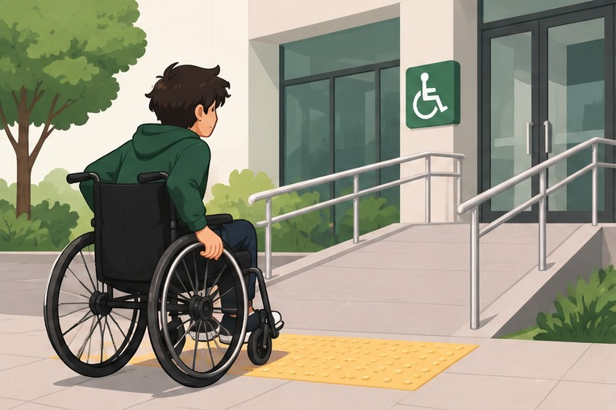

O que significa na prática?
A acessibilidade física envolve o planejamento de edifícios, ruas, meios de transporte e espaços públicos para reduzir obstáculos. Ela considera, por exemplo, pessoas que usam cadeira de rodas, bengalas, andadores ou que possuem mobilidade reduzida temporária ou permanente.
Exemplos importantes
- Rampas e elevadores: oferecem alternativas às escadas e devem permitir circulação segura.
- Pisos táteis: auxiliam a orientação e a identificação de obstáculos por pessoas com deficiência visual.
- Portas e corredores adequados: facilitam a passagem de diferentes pessoas e equipamentos de mobilidade.
- Banheiros acessíveis: precisam oferecer espaço de circulação e barras de apoio corretamente instaladas.
- Transporte acessível: inclui veículos, pontos e informações que possam ser utilizados por todos.
Por que isso importa?
Uma entrada com degraus, uma calçada bloqueada ou a ausência de sinalização pode impedir alguém de estudar, trabalhar, acessar um serviço ou participar de atividades culturais. Remover essas barreiras amplia a independência e a convivência.
Observe ao seu redor: existe uma rota acessível desde a calçada até a entrada dos locais que você frequenta?
Acessibilidade deve ser planejada
Adaptar um ambiente depois de pronto pode ser mais difícil. Por isso, arquitetos, gestores, empresas e comunidades devem considerar a diversidade das pessoas desde o início do planejamento.